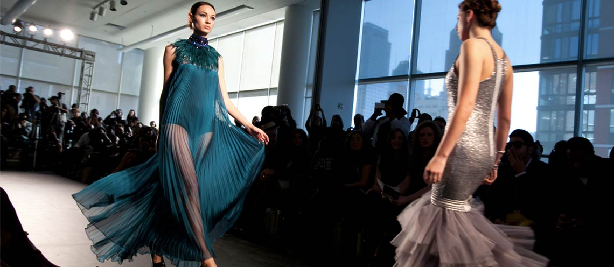

L'INTRODUZUIONE DELLA MODA E L'EVOLUZIONE
- La moda può essere definita come un insieme di tendenze e stili che vengono adottati da una determinata cultura in un determinato periodo di tempo. Si tratta di un fenomeno che riguarda l'abbigliamento, ma che può riguardare anche accessori, acconciature, trucco e linguaggio del corpo.
- La storia della moda risale a tempi antichi, quando le persone iniziarono a decorare i propri vestiti con perline, conchiglie e piume. Tuttavia, la moda come la conosciamo oggi ha le sue radici nel Rinascimento, quando iniziarono a nascere le prime case di moda in Italia e in Francia. Da quel momento in poi, la moda ha conosciuto diverse fasi di evoluzione e cambiamento, influenzata da fattori come la politica, l'economia, la cultura e la tecnologia.
- Nel corso dei secoli, la moda ha seguito diverse tendenze e stili, che riflettono i gusti e le esigenze dei consumatori in un determinato periodo storico. Negli ultimi decenni, con la globalizzazione e l'avvento dei social media, la moda è diventata sempre più accessibile e veloce, con collezioni che vengono presentate e distribuite in tempo reale.
- Oggi, la moda è un'industria multibilionaria che coinvolge designer, stilisti, modelle, fotografi, giornalisti e consumatori, e che ha un impatto significativo sulla società e sull'ambiente. La moda è un modo per esprimere la propria personalità e la propria identità, ma anche un mezzo per comunicare idee e valori. La sua evoluzione è continua e in costante cambiamento, riflettendo le trasformazioni della società e dell'economia.

LA TUA MAGLIA
LA FASHIONWEEK